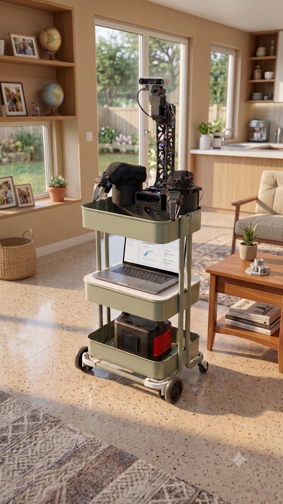
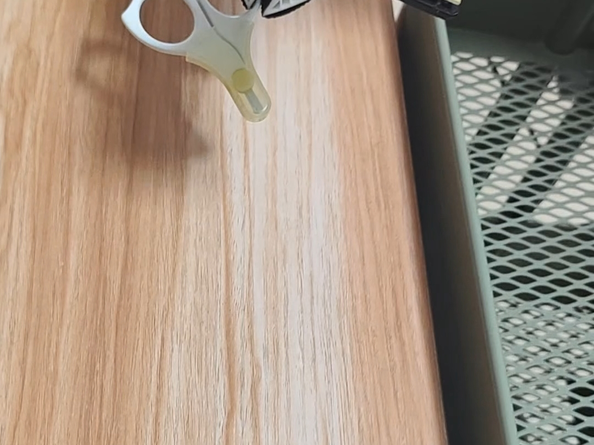
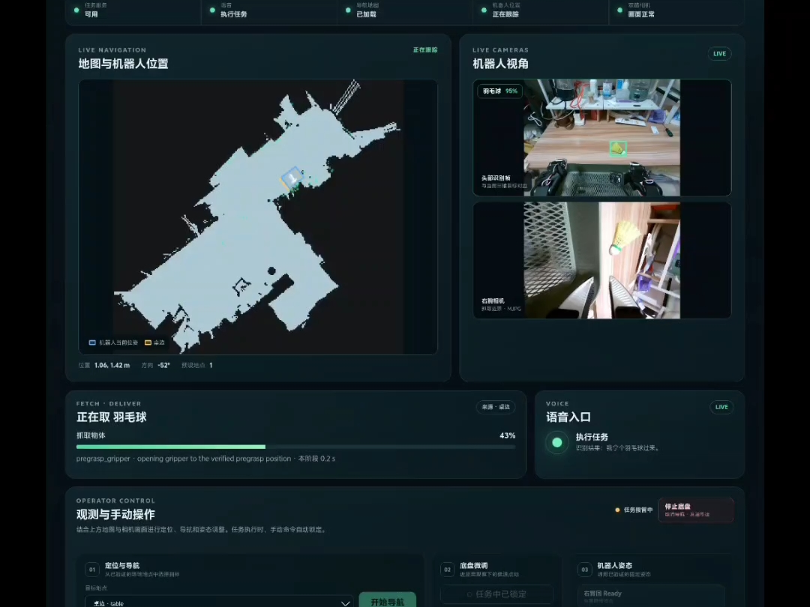

语音召唤 → 自主导航 → 视觉定位 → 学习策略抓取 → 寻人递送。 我主导需求分解、架构设计、标定与数据闭环、真机调试与交付工程化的全过程，实现正在沉淀为开源教学项目。 本页展示全部技术细节与成果，源码随教学版开源前暂不公开。

VLA / VLM 等重模型跑在局域网 GPU 服务器，本体只做控制与执行——分层为了算力，红线为了安全： 智能与实时控制解耦，所有运动指令由 Robot 本地仲裁与执行，这是全页所有设计的第一原则。
围绕「抓得住、抓得稳」的完整技术栈：毫米级标定打底，确定性归传统方法， 接触丰富的最后一段交给 ACT——三层各做自己擅长的事。
四层标定 + 一套误差分解验证法，把末端切平面精度从开环 8.6mm 压到补偿后 1.1–5.8mm、闭环 2–6mm。
FK 与安全的基线：按组释放扭矩手摆 URDF 零位记录 offset，逐关节走行程记录 raw_min/max， 行程转 MoveIt 软限位。人眼对零约 1° 级——够用，且被上层外部真值反查兜底。
16-tag 固定板 + 头 pan/tilt 多姿态，全板角点 bundle PnP，重投影 >1px 拒帧，双向逼近吸收回差。
头固定当裁判，夹爪 tag 随臂动；相机位与 tag 安装位双未知联解（Shah + LM 精修）。 在目标工作空间（桌面 z≈0.70–0.85m）采样——在哪儿干活，就在哪儿标定。
常值补偿 (+7.5, +0.1, +3.7)mm 持久化于配置文件（含有效范围）；视觉闭环同帧相对测量， 手眼 / FK 系统误差自然抵消，切平面只修 1–2 轮。
确定性归传统：可解释、可复现、可回归，每一步都有明确的成功判据与错误码。
VLM bbox 粗框 + SAM2 精确掩码（多种 mask 模式实测对比），把目标点云从桌面场景中干净分离， 是抓取网络出好候选的前提。
GPD（atenpas/gpd C++）采样候选 + PointNetGPD 三分类模型重评分，两个后端同场景对比实测， 按成功率与时延取舍。
检测、分割、候选、规划、执行每步独立判定——空抓、桌沿误检等失败能定位到具体环节并回归， 不依赖"再试一次看看"。
ACT 不学挥臂搜索（交给传统层），只学接触丰富的最后 5–15cm——示教范围故意做窄，数据效率与成功率双高。
predict_action_chunk 每请求取完整 action chunk——
select_action 的内部队列会吞掉随后 99 步的新观测，直接破坏闭环。
为抓取和送达提供可信的移动基础——标定先行、异常可防、目标业务化、脱困有退路。
guard 把 scan 投影到当前地图做穿墙检测，三级输出而非简单阈值熔断： SUSPECT 只提示不锁车；CRITICAL（多束激光连续穿可信墙体）停发 scan + 暂停建图 + 软锁底盘， 阻止错误 free space 写进 pose graph。恢复走状态机：UNLOCK → 定位确认 → RESUME。
20 个 ROS 2 包、39 个接口契约、八阶段状态机编排——按交付验收标准倒推的系统工程， 而不是能跑就行的拼接。
每阶段都是独立 action 接口，具备取消传播、分阶段超时与结构化错误（任务阶段 + 能力错误码 + 可读说明）。
语音（KWS→Whisper→Qwen 意图）/ 网页 / CLI 三入口归一到同一任务编排。
AMCL 协方差 + scan-map 一致性双条件，不达标自动撒粒子并重定位收敛。
Nav2 position-only 到桌旁 → Spin 收敛朝向 → 自研精确 dock 贴桌，含横向误差校正。
VLM bbox（唯一语义入口）→ 中心窗口深度中值 → 针孔投影 → TF 链定位到 map。
IK 种子序列 → MoveIt 规划 → 本地校验 → 单点 4s 轨迹 → 实测关节到位才放行。
实测上下文启动 ACT streaming；VerifyGrasp 腕部复核 + 夹爪信号双判定，失败自动重抓。
后退 → 机身 Spin → 蛇形头扫，YOLO 逐视角检测；standoff 候选点 + 路径校验接近。
持物门 → 递送位 → 松爪 → 回 ready；预录 MP3 语音反馈 + 结构化任务事件上报。
从语音下发任务到递送完成，操作员全程可见、可控、不越权。

离线安装、原子升级、可回滚、可卸载、可远程诊断。
SHA-256 manifest 校验；.staging 解包 + current 原子切换；重复安装幂等；升级后 doctor 门禁，失败自动回退；客户机零构建。
xlerobotctl install-release / rollback--keep-assets 保留配置 / 资产 / 日志；--purge 对服务、规则、用户、目录逐项确认无残留。
uninstall.sh --keep-assets | --purgedoctor 结构化体检；support-bundle 脱敏打包支撑远程定位；持久日志统一 /var/log/xlerobot + logrotate；任务级 JSONL trace 带唯一 task_run_id。
xlerobotctl doctor / support-bundledemo / mapping / calibration / collection 固定 launch 组合，systemd Conflicts + flock 双重互斥，同一时刻只有一个 profile 持有硬件。
xlerobotctl start demo所有设计决策以真机回归为准。git 历史是一条「现象 → 定位 → 修复 → 回归」的实证链：空抓、Spin 后横向偏差、导航确认竞态，都是在真机前发现并修复的。
接口先行（39 个 action / srv / msg 契约，零死定义），契约测试锁定已验证行为，验收标准可机器检查。
逐行实现大量借助 AI；我负责需求分解、架构决策、代码评审与真机验证。AI 产出的每一行都要过评审与回归——这是我对 AI 时代工程师工作方式的践行。
交付前完成四领域并行审查 + 关键结论独立复核，输出带 path:line 证据链的审查报告，并按 P0/P1 跟踪修复。
视觉引导抓取的根、电信级的工程化训练、机器人全栈的实战——同一条能力线，三种形态。
硕士课题：结构光投影 3D 视觉系统搭建、基于点云的物体位姿估计与 bin-picking 抓取研究。 今天的视觉引导抓取与标定工作，正是硕士研究方向的工程延续。
4G/5G 基站应用软件、5G 核心网信令面开发（AMF / SMF / PCF / UDM）：分布式高可用、主备秒级切换、 状态机驱动架构。看门狗、所有权、取消传播的机器人运行时安全设计，与电信级容错一脉相承。
一个多月的真机密集迭代：从舵机通讯、底盘驱动到全链路打通，首次跑通召唤取物送达主 demo。 收获不只是代码，而是对问题空间的理解——以及一个教训：能跑 ≠ 能交付。
以交付验收标准倒推设计与测试：四 profile 隔离、release 生命周期、标定工具链、ACT 数据闭环、 诊断与支持体系。验收标准覆盖命令 / 语音入口连续成功、重启状态恢复、两种卸载无残留。 源码私有，本页展示其全部技术细节。
把验证过的产品实现沉淀为教学 / 参考栈：更细的模块边界、mock 层、课程化文档，计划开源。 让后来者可以一个能力一个能力地学习，再组合成完整 demo。
对机器人系统 / ROS 2 或具身智能应用方向的机会感兴趣，欢迎交流。
可以聊：ROS 2 系统架构 · 具身智能数据闭环 · 标定与视觉引导抓取 · 机器人产品化交付